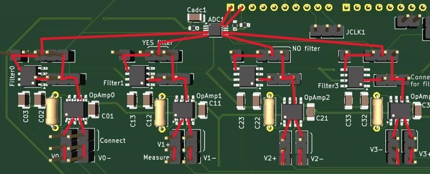
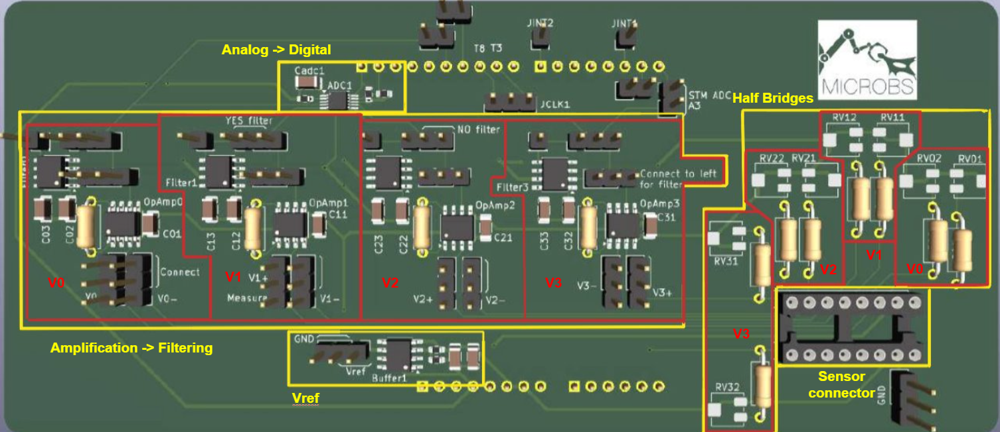

Readout Circuit for Endovascular Microsensors
Summer 2025 (EPFL - MICROBS Laboratory)
Objective
Redesigned the electrical readout interface for a multi-sensor endovascular guidewire (4 pressure sensors) to monitor blood flow dynamics. The project focused on optimizing signal integrity and migrating the system to a custom PCB architecture.
Key Contributions
- Analog Signal Chain: Validated a signal conditioning path using Instrumentation Amplifiers (AD623) and 8th-order Switched-Capacitor Filters (MAX7403) to amplify and clean micro-volt sensor outputs.
- Architecture Optimization: Conducted rigorous characterization of the legacy multiplexed I2C architecture, identifying critical bottlenecks. Re-engineered the circuit topology to ensure data acquisition across all 4 channels.
- MCU Migration (STM32): Migrated logic from Arduino to an STM32 microcontroller to leverage higher processing speeds, expanded memory, and advanced peripheral capabilities.
- PCB Design: Designed a custom Printed Circuit Board (PCB) integrating the new analog chain and MCU.
Visuals
 Fig 1. PCB Design
Fig 1. PCB Design

Fig 2. Signal Path

Fig 3. PCB blocks